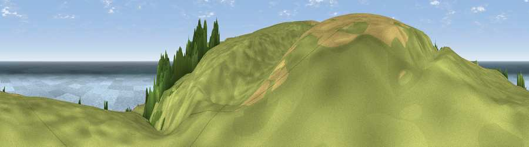

Viewpoint near Robin Hood's Bay
#2625 in England · top 9% of its area beats it · near Robin Hood's BayWhere it is
The exact computed spot (NZ 95075 07075). Click the marker for map links.
The view, rendered

A 360° render of this exact spot computed from the terrain model, tree cover and land cover — summer colours, afternoon light, calibrated against photographs of famous viewpoints. Real trees, hedges and buildings will differ in detail.
The panorama
Grey silhouette: terrain skyline in each direction (720 bearings, Earth curvature and refraction included). Dashed green: skyline with trees (+15 m) and buildings (+8 m) as obstacles. Blue strip: how far the ground is visible on each bearing.
Where the view opens
Wedge length = distance to the farthest visible ground on that bearing (vegetation-aware). Rings at 10, 25 and 50 km.
What fills the view
58% water · 30% grassland · 6% woodland · 6% cropland
Angular shares of the visible panorama (visual magnitude), not map area. Landscape diversity 0.44 (0–1 Shannon).
Key numbers
More beautiful places nearby
The staircase of upgrades: each row has a higher view potential than everything closer. Driving times are estimates from straight-line distance, calibrated against real road routing — check an actual route before setting out.
| Place | Direction | Drive | Score |
|---|---|---|---|
| Viewpoint near Robin Hood's Bay | WNW · 0 km | ~2 min | 79.4 |
| Viewpoint near Robin Hood's Bay | S · 1 km | ~3 min | 82.6 |
| Viewpoint near Robin Hood's Bay | SW · 1 km | ~3 min | 83.3 |
| Viewpoint near Ravenscar | SSE · 5 km | ~11 min | 90.0 |
| Viewpoint near Easington | WNW · 24 km | ~40 min | 90.2 |
| The Knoll | SSW · 442 km | ~415 min | 91.0 |
54.45018, -0.53521 · source: screening · position refined by local search. Computed location — check access rights before visiting.